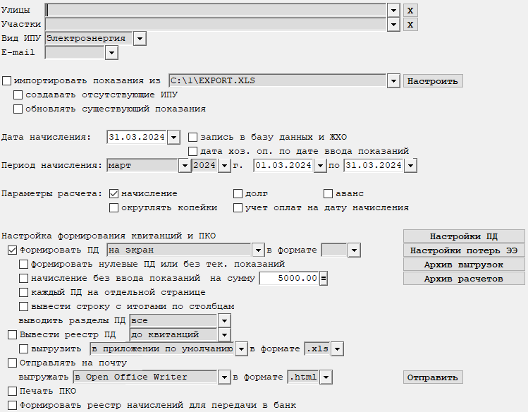
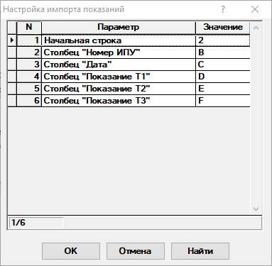
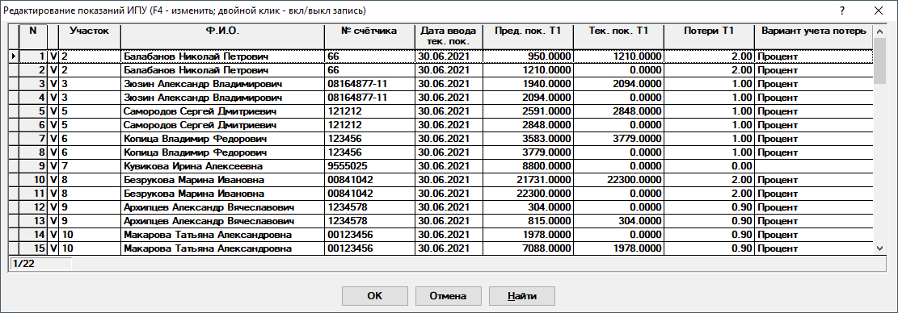
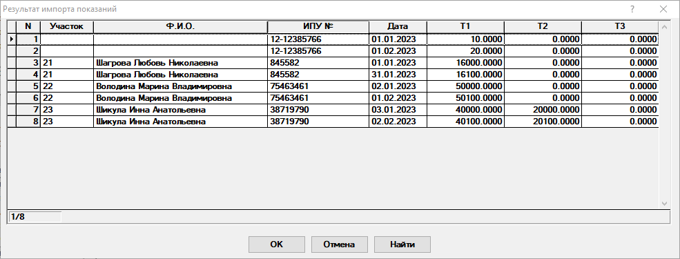

Бланк "Начисление по показаниям ИПУ"
Данный бланк предназначен для ввода показаний и начисления по списку участков (рис. 1).

Рис. 1. Бланк " Начисление по показаниям ИПУ"|
|
Бланк содержит графы множественного выбора. Подробное описание работы с данными графами находится тут. |
|
|
Бланк поддерживает расчет с использованием диапазонов объемов потребления ЭЭ. Данный вид расчета можно включить соответствующей опцией в диалоге Настройки блока. Так же необходимо указать к какому диапазону относится тот или иной тариф в справочнике взносов и тарифов. |
Рассмотрим поля, необходимые для заполнения:
-
Улицы - выбираются улицы, по которым необходимо выполнить расчет. Возможен выбор произвольного количества улиц. Если оставить графу пустой, то отбор будет осуществляться по всем улицам.
-
Участки - выбираются участки, по которым необходимо расчет. Возможен выбор произвольного количества участков. Если оставить графу пустой, то отбор будет осуществляться по всем участкам.
-
E-mail - указывается наличие или отсутствие адреса электронной почты у участков, по которым будут сформированы ПД. Если графа не заполнена, то обработаны будут все участки. В противном случае, будут обработаны только те участки, у которых есть или нет адреса электронной почты.
-
Вид ИПУ - выбирается вид ИПУ для внесения показаний.
-
импортировать показания из - признак импорта показаний из внешнего файла. На данный момент поддерживаются файлы форматов .xls и .xlsx.
-
кнопка "Настроить" - открывает диалог настройки параметров импорта(рис. 2).

Рис. 2. Бланк "Настройки параметров импорта" -
создавать отсутствующие ИПУ - автоматическое создание ИПУ, которых нет в базе данных.
-
обновлять существующие показания - признак обновление ранее внесённых показаний.
-
Дата начисления - дата хозяйственной операции. Автоматически может менять в зависимости от того, какой период будет выбран в графах периода начисления. По умолчанию при смене периода датой начисления будет считать конец периода.
-
Запись в базу данных и ЖХО - указывается, формировать ли хозяйственные операции и сохранять их в базу данных.
-
Период начисления - указывается период, за который вносятся показания. Если в настройках блока для настройки Способ внесения показаний выбрано значение Несколько раз в месяц, то можно осуществлять внесение показаний за произвольный период. Если же выбрано значение Один раз в месяц, то будет учитываться только период равный одному месяцу.
-
Параметры расчета - позволяет настроить необходимые варианты расчета. Возможены любые комбинации.
-
начисление - признак включения расчета начислений.
-
долг, аванс - признак включения расчета сальдо.
-
округлять копейки - округление копеек до рублей.
-
учет оплат на дату начисления - будут учтены все оплаты при расчете сальдо, которые были сделаны на дату начисления.
-
Настройка формирования квитанций и ПКО
-
Формировать ПД - признак формирования квитанций в бланке или на магнитный носитель(МН). В графе справа от опции можно указать, куда выводить ПД. Доступны вывод на экран или на МН через указанное приложение в указанном формате. При выводе на экран графа с форматом игнорируется.
-
формировать квитанции при отсутствии тек. показаний - указывается, выводить ли в квитанции ИПУ с нулевыми текущими показаниями. В квитанции будут выведены только предыдущие показания и тариф. ДШК не формируется, если сумма по квитанции равна нулю.
-
начисление без ввода показаний на сумму - признак формирования начисления без ввода показаний на указанную сумму
-
каждый ПД на отдельной странице - каждый ПД будет печататься на отдельной странице.
-
вывести строку с итогами по столбцам - будет выведена строка с итогами по столбцам, которые поддерживают подсчет итогов.
-
выводить разделы ПД - указывается, какие разделы ПД необходимо будет вывести на экран или выгрузить на МН.
Выгрузки на МН можно просмотреть, если нажать на кнопку Архив выгрузок.
Кнопка Архив расчетов - открывает архив расчетов. Позволяет повторить расчет с установленными ранее параметрами.
-
-
Вывести реестр ПД - признак формирования реестра сформированных квитанций. Его можно вывести до или после квитанций. Реестр можно выгрузить на МН через указанное приложение в указанном формате включив опцию выгрузить.
-
Отправлять на почту - признак отправки квитанций на электронную почту. Чтобы отправить письма необходимо нажать на кнопку Отправить. Отобразится редактор списка рассылки.
-
Печать ПКО - настройка печати приходных кассовых ордера.
Будьте внимательны! Формирование хозяйственных операций по приходным ордерам не отключается.
-
Формировать реестр начислений для передачи в банк - признак формирования реестра начислений для передачи в банк. После формирования реестра будет предложено открыть директорию, в которую были выгружены файлы.
-
Кнопка Настройки печати - вызывается диалог настройки печати квитанций.
-
Кнопка Настройки потерь ЭЭ - вызывает диалог настройки расчета и вывода для потерь ЭЭ.
-
Вариант учета - указывается вариант учета потерь электроэнергии. Значение из данной графы учитывается только при внесении новых показаний. При наличии у уже внесенных показаний данных по потерям значение в данной графе игнорируется. Рассмотрим возможные варианты:
-
Не учитывать - потери электроэнергии не учитываются при внесении новых показаний.
-
Процент - потери электроэнергии учитываются как процент от суммы начисления по показаниям.
-
Сумма - потери электроэнергии учитываются как фиксированная сумма к начислению по показаниям.
-
Сумма к тарифу - потери электроэнергии учитываются как сумма к тарифу.
-
-
Значение потерь Т1 (... Т2, ... Т3) - указывается значение для расчета потерь электроэнергии. Если в графе выбран вариант Не учитывать, то значения в графах не будут учтены.
-
Отдельная хоз. операция - признак формирования отдельной хозяйственной операции для потерь электроэнергии.
-
Отдельная квитанция - признак формирования отдельной квитанции для потерь электроэнергии.
-
После заполнения полей, влияющих на расчет, необходимо пересчитать
бланк. Для этого нажмите кнопку
 на панели инструментов, клавишу F9, или комбинацию
клавиш Ctrl + Enter.
на панели инструментов, клавишу F9, или комбинацию
клавиш Ctrl + Enter.
Отобразится редактор показаний, в котором можно редактировать показания за указанный период (рис. 3).

Рис. 3. Редактор показанийЗначок V означает, что показания будут принимать участие в расчете. Если необходимо убрать из расчета какие-то показания, то надо дважды кликнуть по строке, чтобы значок исчез. Для редактирования показаний необходимо нажать на клавишу F4 на клавиатуре. После выполнения всех необходимых действий необходимо нажать на кнопку ОК и будет запущен процесс формирования платежных документов.
После пересчета на экране отобразятся платежные документы, а так же диалоги редактирования хозяйственных операций, если были включены соответствующие опции. Приходные ордера будут сформированы в отдельном бланке.
Если включена опция импорта показаний из файла, то будет выполнен анализ указанного файла. После этого будет отображена таблица с результатами импорта(рис. 4).

Рис. 4. Результаты анализа файла импортаПустые ячейки Участок и Ф.И.О. указывают на то, что ИПУ с таким номером не обнаружен в базе данных. Чтобы выбрать участок, к которому будет относиться ИПУ, достаточно дважды кликнуть по строке. Отобразится диалог выбора участка. После выбора участка для всех показаний по ИПУ с этим номером будет обновлен номер участка и Ф.И.О. Чтобы эти ИПУ добавились в БД необходимо включить опцию создавать отсутствующие ИПУ.